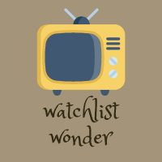
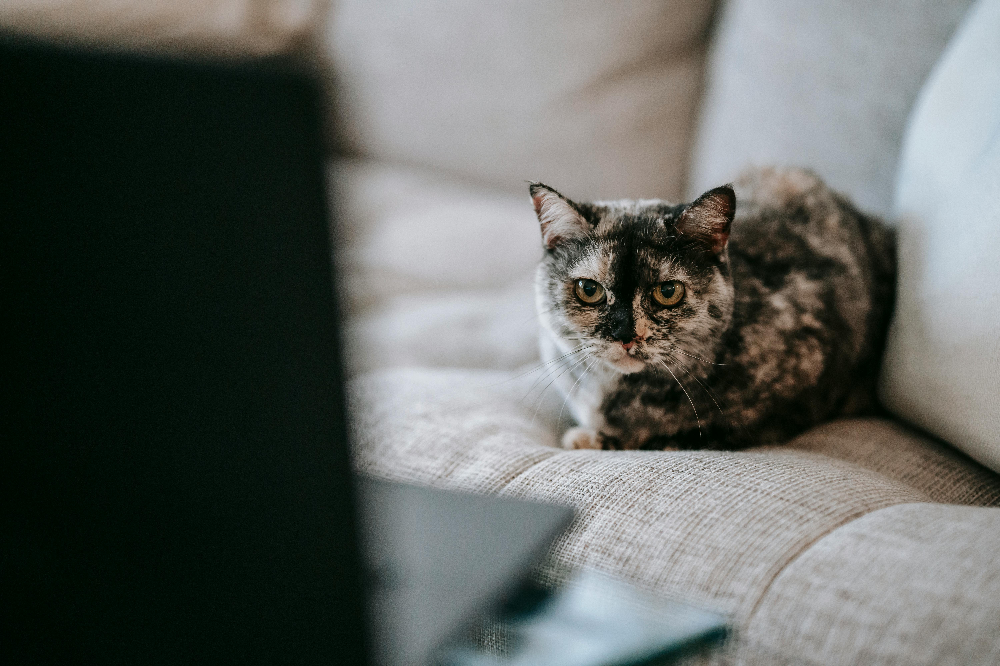
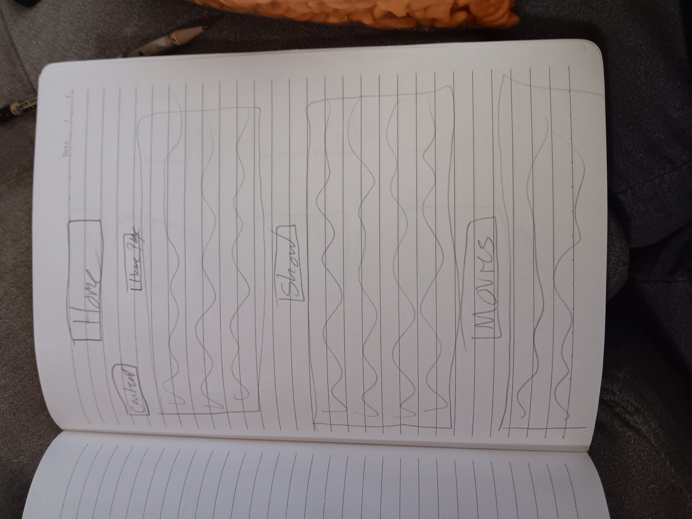
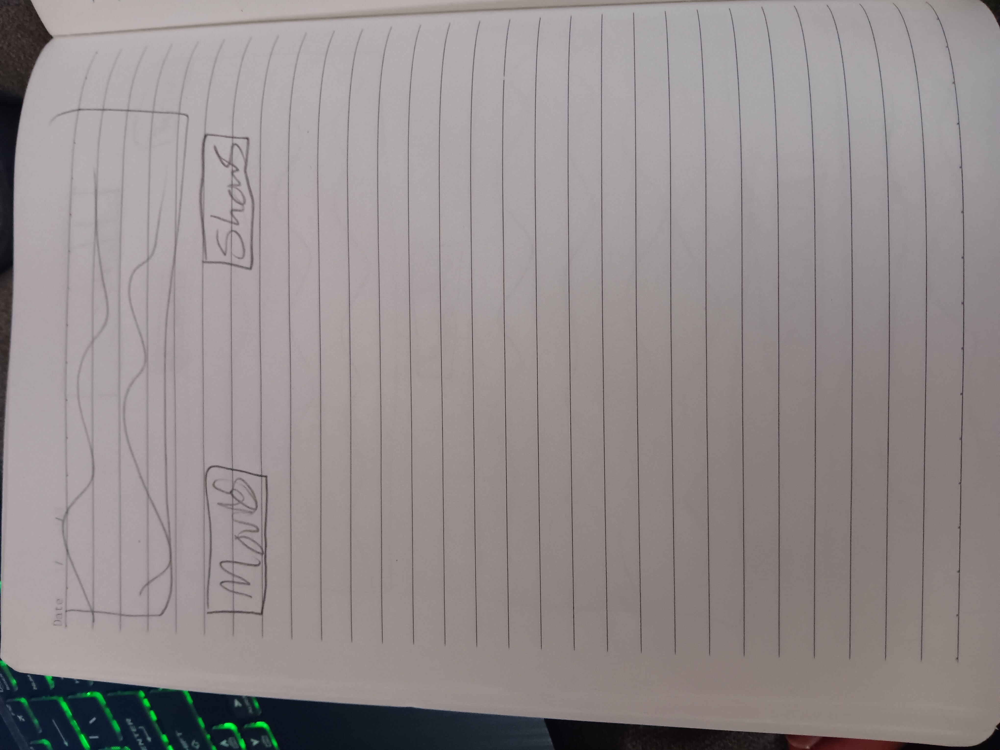
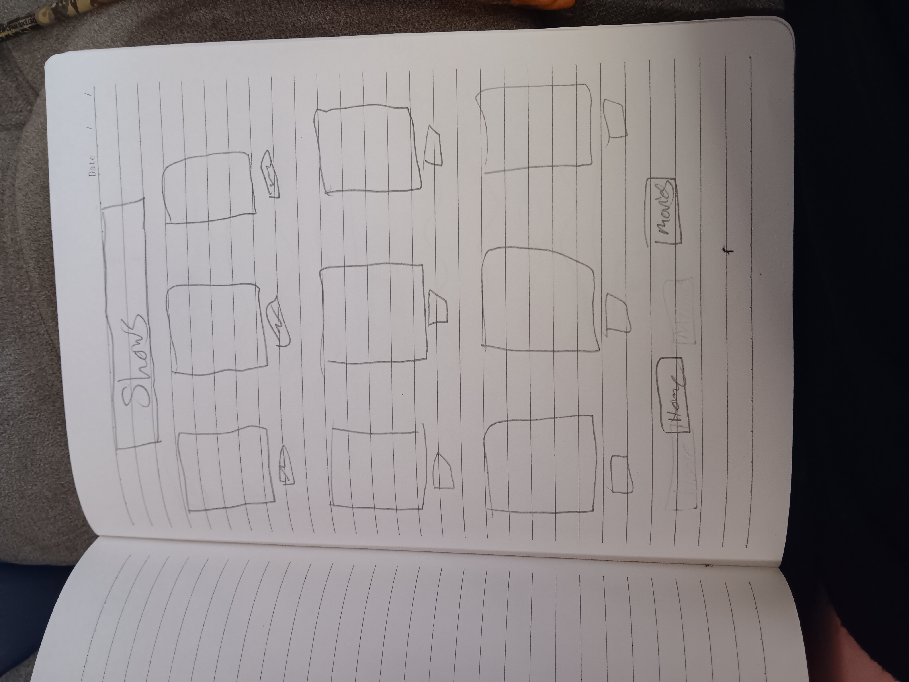
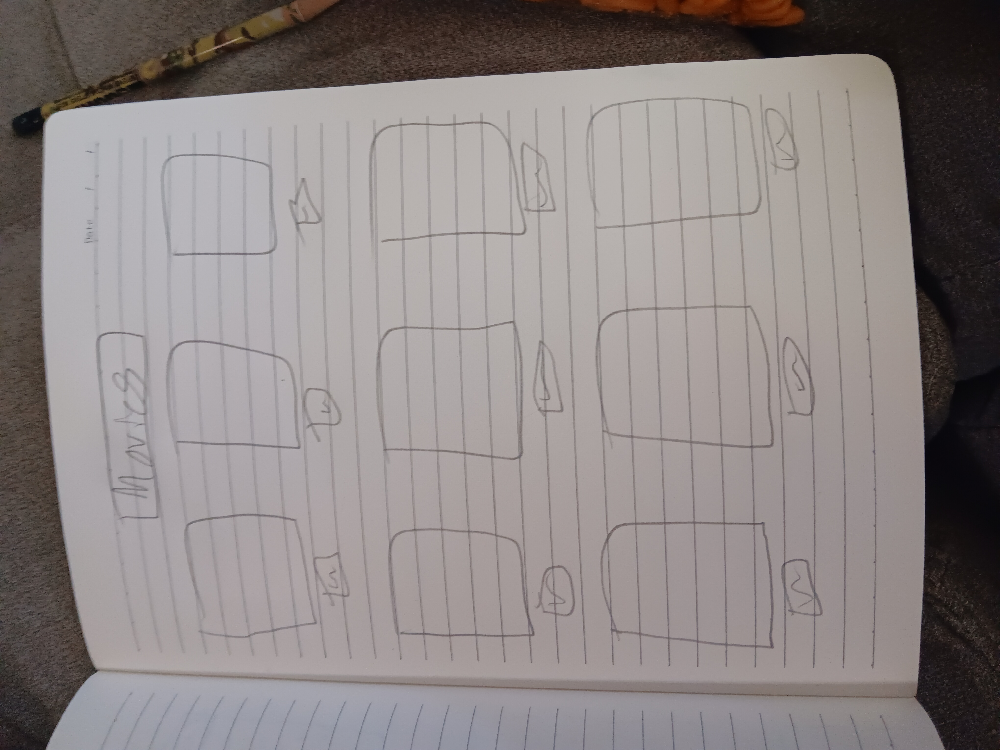

Overview
Purpose
The purpose of this website is to show some of my personal favorite shows and movies. Like a watchlist for other people so they don't have to scroll through streaming services for hours.
Audience
Anyone who watches TV
Branding
Website Logo
Style Guide
Color Palette
| Primary | Secondary | Accent 1 | Accent 2 |
|---|---|---|---|
Typography
Heading Font: Pacifico
Paragraph Font: Zeyada
Normal paragraph example
Watchlist Wonder is a website of things to watch when you aren't sure how you are feeling. Instead of scrolling on hours on streaming services trying to figure out what to watch, why not look at a watchlist of fun movies and shows to give you inspiration.
Colored paragraph example
From chick-flicks to action adventure, Watchlist Wonder has all sorts of good value good to watch shows and movies. These are all shows and movies that I personally have loved.
Navigation
Site Map
Content
Home page
Why will people come to my site. It is a site that can help people decide what to watch, it will help people to not have to scroll for hours through different movies on different streaming services. Watch List Wonder, although a fun website, might not fix that problem right away though, but it sure will help the boredom of scrolling though streaming services. Watch List Wonder is a great way to look at a bunch of different shows and movies when you aren't sure what to watch, Watch List Wonder can help narrow it down and help to limit the hourless scrolling though streaming services. Watch List Wonder will help answer the most mundane question everyone faces usually every time they turn on the TV to watch something, “What should we watch?” Watch List Wonder has different movies and shows that are fun to watch, it can help eliminate the endless scrolling though shows and movies. Although Watch List Wonder might not fix the question “what should we watch?” but it can help make looking more fun. Who doesn’t like to find fun websites where you can find different movies and shows to watch and have fun seeing what different people like to watch.
Images for the Home page
Shows
Activities that visitors will get to have while on my site. First off Watch List Wonder is a website that has basically a list of movies and shows that can be fun to watch. Watch List Wonder started because, me personally I don’t like scrolling on streaming services to find a show or movie to watch, but for some reason, a website is different. It doesn’t seem like it’s something that's taking hours to figure out, instead it's just more of a fun activity to do that is also helping you solve the problem “what are we going to watch tonight.” Instead of fighting over what to watch, looking at a fun website on different movies and shows and seeing what looks good instead of the mindless scroll on the TV. Whether it be a action, or romance, Watch List Wonder has you covered. People can find all sorts of good value movies and shows on Watch List Wonder. Have you ever watched a movie that was so good that you had to sit there wishing you could watch it again for the first time? Well, we might not be able to get you to watch it for the first time again, but we can show you quality movies and shows that have that same effect and hope that you can have a better time watching the movies and shows we have compiled for you.
Images for the Page 2

Movies
Visitors will come to Watch List Wonder because not only is it a fun website that helps with a very common problem, but it is also an astatically pleasing site that is pretty and fun to use. Have you ever found a website that was an informational website, but you didn’t want to click from it because it was so fun. I have, that is why I am making this website as fun as I can make it. So that not only will it hopefully make finding a movie and show easier, but hopefully it will also make it fun to find something to watch. My goal with Watch List Wonder is to make it a fun experience trying to find something to watch, not a stressful one full of fighting and frustration. With Watch List Wonder, hopefully it will help you find what you and your family are looking for but also help you all find something that will make it worth watching again with more family and friends.
Images for the Page 3

1609 of 1609 families Wireframes
Create three wireframes for your site. One for each page and list them here
Home
Have fun! My second page is about shows I personally love to watch. The other page is about the movies I love to watch. Happy browsing!
 Shows
These are my favorite shows to watch. Have fun browsing!
Movies
These are my favorite movies to watch.
